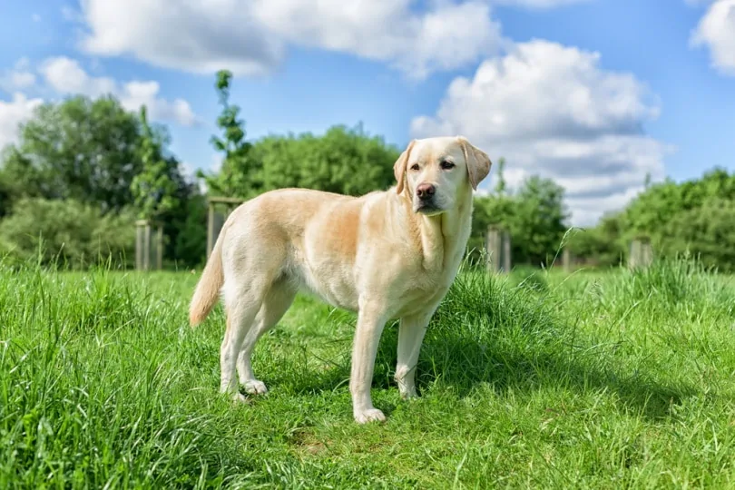
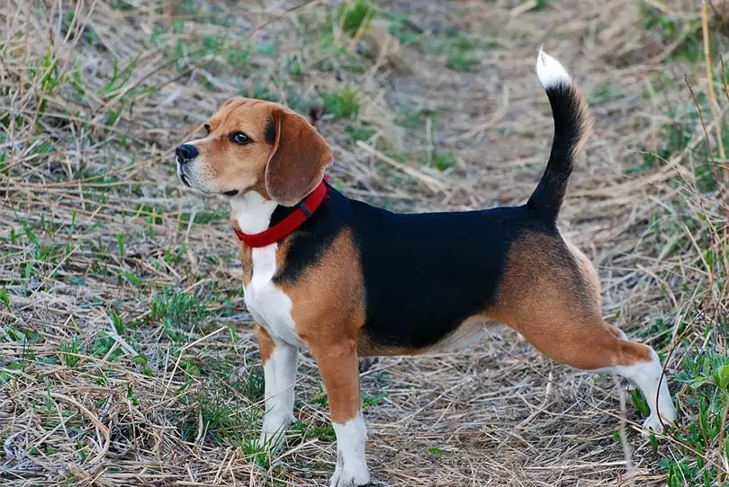

World class lapdog! French Bulldogs make affectionate, curious and playful pets. They fit right at home in an apartment or out in the country, they are easy to train, and make surprisingly good watchdogs with their loud bark and territorial behavior. However, they are also known for their snore due to their short snouts and can initially be quite stubborn.

These water loving dogs were originally bred to be hunting dogs and have since become a top contender for america's favorite dog breed. Labs are excellent water dogs as their powerful tails make a strong rudder, their waterproof coats keep them warm, and their webbed feet help them keep up with game. While they also have boundless amounts of energy, they also need the proper training and socialization to hone their intelligent dementors and all to curious personalities.

Originally from Scotland, Golden Retrievers are hard workers and need a lot of Exercise. They’re one of a few breeds who prefer to have a job which makes this breed perfect therapy dogs as they always are happy to provide empathy and unconditional affection. However, Golden Retrievers are particularly mouthy and prefer to be carrying something around wherever they go but their hold is quite soft so as to not damage game or even hold a raw egg in their mouth without cracking the shell.

German Shepherds are mostly known for their association as police and military dogs and for good reason. German shepherds are the third most intelligent dog breed and have been trained to recognize COVID-19. They even served in the military during WWI and WWI. Fun fact: during the silent film era, German Shepherds were regular stars in a multitude of media

The standard Poodle Breed originated from Germany where its original name ‘pudel’ ment “to splash in water”. Likewise in France, where it is the national dog, its name means “duck dog”. These names are due to the Poodle being bred as a hunting dog for ducks and birds. For this reason they are very active dogs and while it might seem ridiculous their hair styles are designed for function rather than looks to allow poodles to be kept warm while also streamlining their movements.

Bulldogs, also known as “The Churchill Dog” chosen by Prime Minister Winston Churchill as a symbol of courage and strength, make very popular mascots. Two US presidents have owned Bulldogs and they get their name from their use as bull baiters. However, about 80% of bulldog births happen via c-section due to their large heads.

Rottweilers as we know them are descended from Ancient Roman Dogs used for herding and other tasks. As the Roman empire expanded, Rottweilers were used to transport cattle along with expanding armies. This is likely the case because they are one of the many breeds who like having work. They gained popularity as police dogs for a time and are also award winning therapy dogs.

Fun fact about Beagles, their ears, which are quite long, actually help their sense of smell as they catch scent particles and keep them close to their noses. Their name comes from their ability to vocalize in three different ways, a bark, a yodel, and a howel which earns them the title of one of the most vocal dog breeds.

While we may most associate Dachshunds as the ‘Wiener dog’ - hot dogs actually got their name from the Dachshund sausage named for this dog breed. Furthermore, Dachshunds were the first Olympic Mascot in 1972 and there are even races of this breed in Australia and California. Also, due to their small size, there have been several Dachshunds who have been named the World's Oldest Dog.

These dogs are quite versatile hunting dogs who are able to hunt, point and retrieve all kinds of prey. They achieve this with their incredible senses and instincts that can allow them to scale fences or walls while in pursuit. Like retrievers, German Shorthaired Pointers have boundless amounts of energy and thus it is recommended they attend training to hone their skills. However, despite their short hair, they are heavy shedders especially in summer.